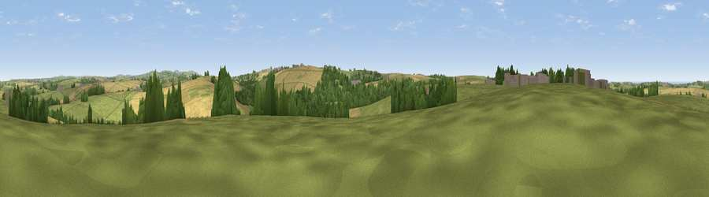

Viewpoint near St. Newlyn East
#23817 in England · top 44% of its area beats it · near St. Newlyn EastWhere it is
The exact computed spot (SW 83475 56225). Click the marker for map links.
The view, rendered

A 360° render of this exact spot computed from the terrain model, tree cover and land cover — summer colours, afternoon light, calibrated against photographs of famous viewpoints. Real trees, hedges and buildings will differ in detail.
The panorama
Grey silhouette: terrain skyline in each direction (720 bearings, Earth curvature and refraction included). Dashed green: skyline with trees (+15 m) and buildings (+8 m) as obstacles. Blue strip: how far the ground is visible on each bearing.
Where the view opens
Wedge length = distance to the farthest visible ground on that bearing (vegetation-aware). Rings at 10, 25 and 50 km.
What fills the view
48% grassland · 35% cropland · 13% woodland · 2% built-up ·
Angular shares of the visible panorama (visual magnitude), not map area. Landscape diversity 0.48 (0–1 Shannon).
Key numbers
More beautiful places nearby
The staircase of upgrades: each row has a higher view potential than everything closer. Driving times are estimates from straight-line distance, calibrated against real road routing — check an actual route before setting out.
| Place | Direction | Drive | Score |
|---|---|---|---|
| Viewpoint near St. Newlyn East | E · 2 km | ~4 min | 50.1 |
| Viewpoint near St. Newlyn East | SSE · 2 km | ~6 min | 70.7 |
| Viewpoint near Holywell | W · 7 km | ~15 min | 71.1 |
| Viewpoint near Penhale | E · 8 km | ~16 min | 81.7 |
| St Agnes Beacon | WSW · 14 km | ~25 min | 86.1 |
| Viewpoint near Foxhole | E · 14 km | ~26 min | 86.4 |
| Viewpoint near Stenalees | E · 17 km | ~29 min | 88.0 |
| Viewpoint near Crackington Haven | NE · 48 km | ~69 min | 88.1 |
50.36599, -5.04597 · source: screening · position refined by local search. Computed location — check access rights before visiting.